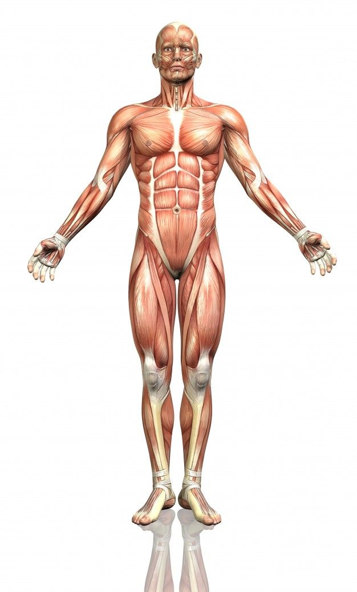

Mapa del Cuerpo Humano
Inicio
|
Mapa 2
Haz clic en las distintas partes del cuerpo para obtener información sobre cada área.

Mapa interactivo del cuerpo humano
Lista de partes del cuerpo y enlaces
Cabeza: información sobre salud cerebral
Torso: información sobre el pecho y abdomen
Brazo izquierdo
Brazo derecho
Piernas: información sobre las extremidades inferiores
Pies: cuidado y salud de los pies
Información general sobre el cuerpo humano